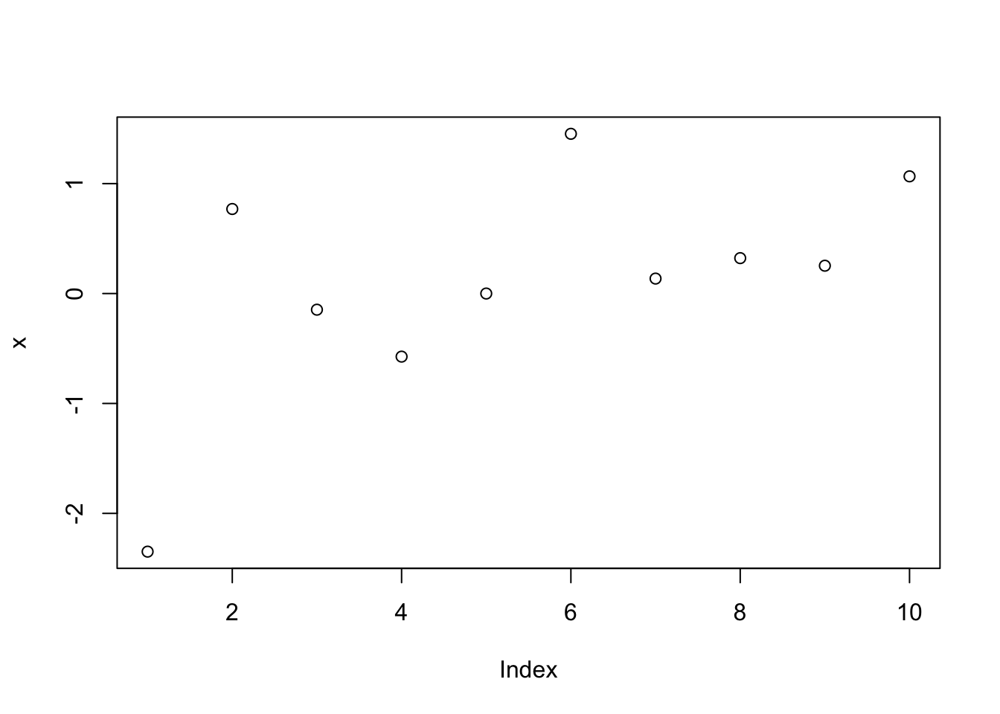
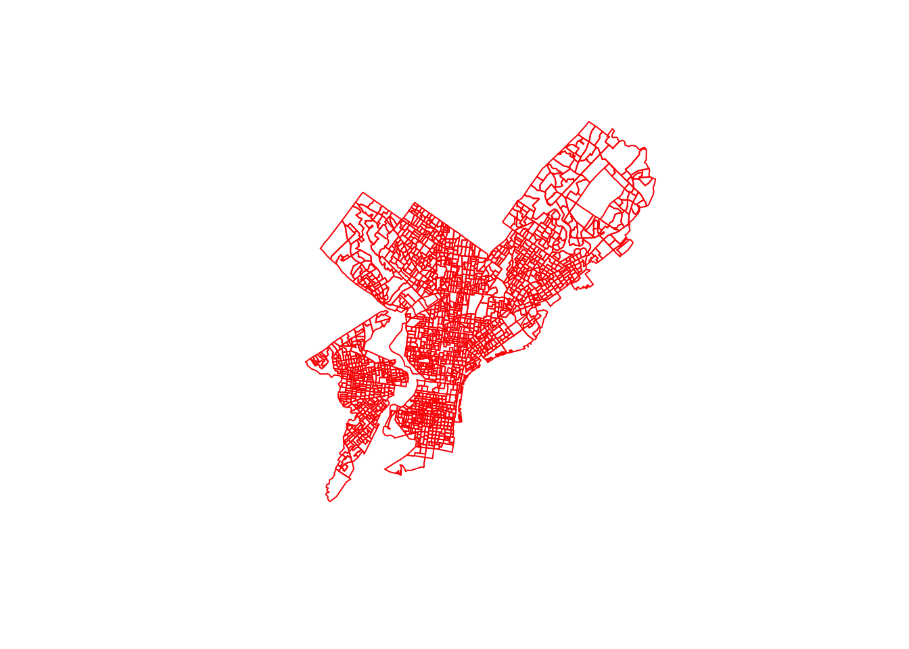
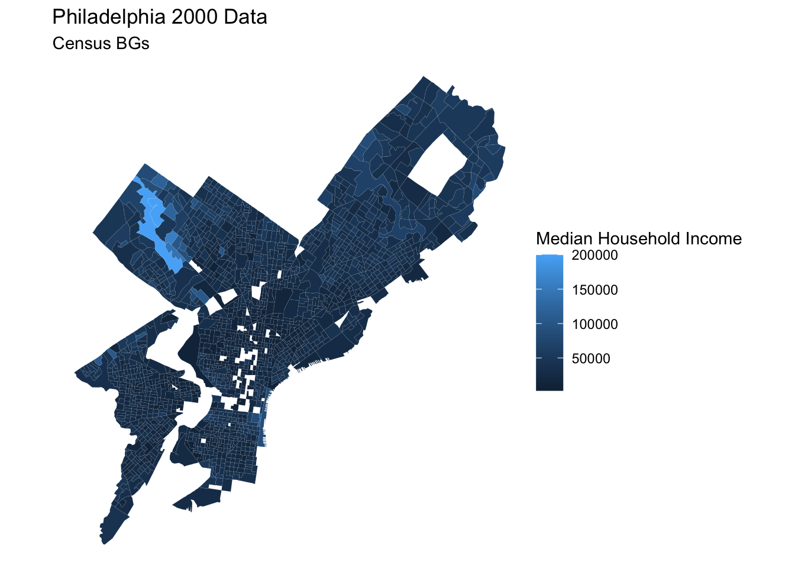

#setwd(...) Lecture 2
Getting Started with R
Week 2
Lecture 1
Setting the working directory
You can set the working directory using this command:
You can see the working directory using this command:
getwd()[1] "/Users/michaelpincus/Documents/MUSA/Statistics/statistics/weekly-notes"Review of Data Types
An \(r \times c\) matrix is a rectangular array of symbols arranged in \(r\) rows and \(c\) columns.
\[A = \begin{bmatrix} 1 & 2 \\ 6 & 3 \end{bmatrix}\]
A column vector is an \(r \times 1\) matrix, a matrix with only one column.
\[A = \begin{bmatrix} 1 \\ 6 \end{bmatrix}\]
A row vector is a \(1 \times c\) matrix, a matrix with only one row.
\[A = \begin{bmatrix} 7&12 \end{bmatrix}\]
A \(1 \times 1\) matrix is called a scalar, but it’s just an ordinary number.
\[A = [4]\]
To define a vector in R with the numbers 3, 4, 5, we can use the function c() which is short for concatenate:
b = c(3,4,5)
b[1] 3 4 5Functions
There are many different kinds of functions in R:
mean(b)[1] 4sum(b)[1] 12The following code generates and plots 10 random numbers from the standard normal distribution:
x <- round(rnorm(10, mean=0, sd=1), 3)
plot(x)
Vectors
vec1 = c(1,2,3,4,5,6)
vec1[1] 1 2 3 4 5 6vec1[5][1] 5vec1[3] = 12
vec1[1] 1 2 12 4 5 6vec2 = seq(from=0, to=1, by=0.25)
vec2[1] 0.00 0.25 0.50 0.75 1.00sum(vec1)[1] 30vec1 + vec2Warning in vec1 + vec2: longer object length is not a multiple of shorter
object length[1] 1.00 2.25 12.50 4.75 6.00 6.00Matrices
Matrices are like 2-dimensional vectors (or like data tables)
mat = matrix(data=c(9,2,3,4,5,6), ncol=3)
mat [,1] [,2] [,3]
[1,] 9 3 5
[2,] 2 4 6The argument data specifies which numbers should be in the matrix. We use either ncol to specify the number of column or nrow to specify the number of rows.
Matrix-operations are similar to vector operations:
mat[1,2][1] 3r2 <- mat[2,]
r2[1] 2 4 6c2 <- mat[,2]
c2[1] 3 4mean(mat)[1] 4.833333mat1 = matrix(data=c(9,2,3,4,5,6), ncol=3)
mat1 [,1] [,2] [,3]
[1,] 9 3 5
[2,] 2 4 6mat2 = matrix(data=c(7,6,5,3,2,8), nrow=2)
mat2 [,1] [,2] [,3]
[1,] 7 5 2
[2,] 6 3 8matsum=mat1+mat2
matsum [,1] [,2] [,3]
[1,] 16 8 7
[2,] 8 7 14In order to append 2+ matrices, the number of columns has to be the same; in order to merge, the number of rows has to be the same.
merging = cbind(mat1, mat2)
merging [,1] [,2] [,3] [,4] [,5] [,6]
[1,] 9 3 5 7 5 2
[2,] 2 4 6 6 3 8appending = rbind(mat1,mat2)
appending [,1] [,2] [,3]
[1,] 9 3 5
[2,] 2 4 6
[3,] 7 5 2
[4,] 6 3 8trans=t(appending)
trans [,1] [,2] [,3] [,4]
[1,] 9 2 7 6
[2,] 3 4 5 3
[3,] 5 6 2 8dim(trans)[1] 3 4Arrays
Arrays are like matrices, but they have 2 or more dimensions. Think of them as an array of arrays.
z <- array(1:24, dim=c(2,3,4))
z, , 1
[,1] [,2] [,3]
[1,] 1 3 5
[2,] 2 4 6
, , 2
[,1] [,2] [,3]
[1,] 7 9 11
[2,] 8 10 12
, , 3
[,1] [,2] [,3]
[1,] 13 15 17
[2,] 14 16 18
, , 4
[,1] [,2] [,3]
[1,] 19 21 23
[2,] 20 22 24Data Frames
A data frame is a matrix with names above the columns. You can call and use one of the columns without knowing which position it is:
t = data.frame(x=c(11,12,14), y=c(19,20,21), z=c(10,9,7))
t x y z
1 11 19 10
2 12 20 9
3 14 21 7mean(t$z) # or mean(t[['z']])[1] 8.666667Lists
Unlike matrices and data frames, the “columns” of lists don’t have to be the same length:
L = list(one=1, two=c(1,2), five=seq(0,1,length=5))
L$one
[1] 1
$two
[1] 1 2
$five
[1] 0.00 0.25 0.50 0.75 1.00names(L)[1] "one" "two" "five"L$five + 10[1] 10.00 10.25 10.50 10.75 11.00Reading and writing files
d = data.frame(a=c(3,4,5), b=c(12,43,54))
d a b
1 3 12
2 4 43
3 5 54write.table(d, file='tst0.txt', row.names=FALSE)d2 = read.table(file='tst0.txt', header=TRUE)
d2 a b
1 3 12
2 4 43
3 5 54Reading and writing shapefiles
#install.packages('sf')
#install.packages('ggplot2')
library(sf)Linking to GEOS 3.13.0, GDAL 3.8.5, PROJ 9.5.1; sf_use_s2() is TRUElibrary(ggplot2)PhillyData <- st_read('/Users/michaelpincus/Documents/MUSA/Statistics/statistics/RegressionData/Regression Data.shp')Reading layer `Regression Data' from data source
`/Users/michaelpincus/Documents/MUSA/Statistics/statistics/RegressionData/Regression Data.shp'
using driver `ESRI Shapefile'
Simple feature collection with 1720 features and 14 fields
Geometry type: POLYGON
Dimension: XY
Bounding box: xmin: 2660605 ymin: 207610.6 xmax: 2750171 ymax: 304858.8
Projected CRS: NAD83 / Pennsylvania South (ftUS)plot(st_geometry(PhillyData), border='red')
A better way to plot it is with ggplot2:
ggplot() +
geom_sf(data=PhillyData, aes(fill=MEDHHINC), color='white', linewidth=0.01) +
labs(
title = 'Philadelphia 2000 Data',
subtitle = 'Census BGs',
fill = 'Median Household Income'
) + theme_void()
Missing Data
We have some missing data here for variables a and c:
NAEx = read.csv('/Users/michaelpincus/Documents/MUSA/Statistics/statistics/Week2/Missing Data.csv')
NAEx a b c
1 1 3 4
2 NA 5 2
3 3 6 NAmax(NAEx)[1] NAmax(NAEx, na.rm=TRUE)[1] 6The na.rm command tells R whether NA values should be stripped before the computation proceeds.
NAEx$d = NAEx$c + 1
NAEx a b c d
1 1 3 4 5
2 NA 5 2 3
3 3 6 NA NAStrings
Sometimes we want to specify something which is not a number, ex. the name of a measurement station or a data file.
m = "apples"
m[1] "apples"n = "pears"
n[1] "pears"If-Else Statements
w = 3
if(w<5) {d=2} else {d=10}
d[1] 2Functions
fun1 = function(arg1,arg2)
{
w=arg1^2
return(arg2+w)
}
fun1(arg1=3, arg2=5)[1] 14Some useful statistical functions:
a = c(1,1,1,1,1,1,0,0,0,0,0,0,0,2,2,2,3,3,3,4,4)
mean(a)[1] 1.380952max(a)[1] 4round(sd(a),2)[1] 1.36sum(a)[1] 29summary(a) Min. 1st Qu. Median Mean 3rd Qu. Max.
0.000 0.000 1.000 1.381 2.000 4.000 summary(factor(a))0 1 2 3 4
7 6 3 3 2